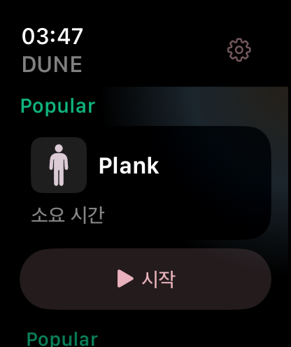
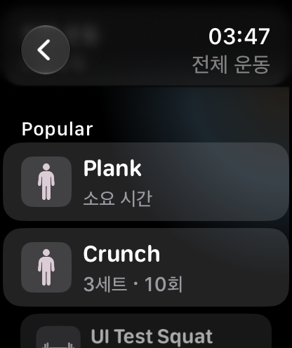
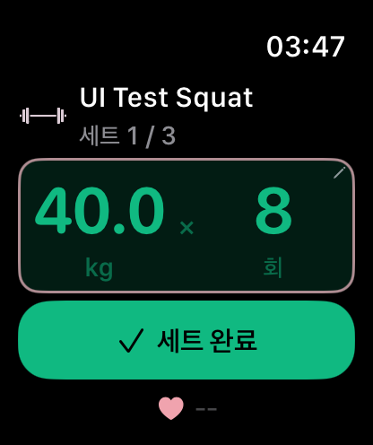

Pâtisserie · Watch 실제 화면
2026-11-19 · Apple Watch Series 12 (46mm) 시뮬레이터 · watchOS 27.2 (24S118) · 416 × 496 px · 소스 540b3e549
Pâtisserie를 적용한 세션에서 홈과 전체 운동을 열고 스쿼트를 시작했습니다. 홈과 전체 운동에서는 오른쪽에 푸른 그림자가 보이고, 운동 중에는 입력 카드의 테두리에 장밋빛이 적용됩니다. 이미지를 열면 원본 크기로 볼 수 있습니다.



Watch UI 테스트 두 개가 통과했습니다. 검증 기록에서 테스트 선택자, 화면 식별자, 캡처 출처와 파일별 SHA-256을 확인할 수 있습니다.